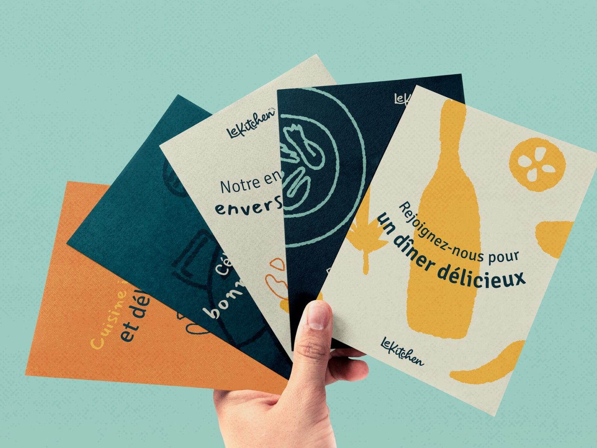

How to outsource a brand identity and still own it
Branding is the project agencies are most nervous to hand over, and for good reason. Here's how to outsource it without losing control of the result.
 By Julia Sonda · · 5 min read
By Julia Sonda · · 5 min read
Of everything an agency can outsource, the brand identity is the one that makes people the most nervous. I understand why. A social post that misses the mark is gone by next week. A logo that misses the mark ends up on the client's packaging, signage and business cards for years.
Branding is also my favorite kind of work, and a big part of what I do for agencies. So here's how an outsourced branding project goes well, step by step, seen from the designer's chair.
First, decide who owns the creative direction
Before any brief, there's one question to answer inside your agency: is the creative direction already set, or do you want the designer to help find it?
Both work. They're just different projects.
- The direction is set. Your team has done the strategy, maybe a moodboard, maybe a clear idea of how the brand should feel. The designer turns that into concepts and a working identity. It's faster, and it keeps your agency's thinking at the center.
- The direction is open. You have the strategy and the client's goals, but no visual direction yet. The designer explores it from the first concepts. It takes a bit longer, and it's where an experienced brand designer adds the most.
Sometimes agencies come to me with the direction already in place. Other times I'm involved from the very first concepts. What causes trouble is when nobody decided, and the designer has to guess.
The brief that saves you a round of revisions
A good brief doesn't need to be long. It needs the things a designer can't find out alone:
- Who the client is, in a few honest lines. What they sell, who buys it, what's changing in the business.
- The client's own words. If they said “we don't want to look corporate” or “we love how Aesop does it”, send it exactly like that.
- What you've already promised. Number of concepts, rounds of revisions, the date of the first presentation.
- Where the brand will live first. Packaging, a website, signage, Instagram. A logo that has to work on a tiny jar label is a different problem from one that goes on a building.
- What's off the table. The color a competitor owns, the font the client can't stand, the symbol the founder insists on keeping.
One thing that doesn't help much on its own is a list of adjectives. “Modern, clean, timeless” describes almost every brief I've read. Two or three reference images, with a note on what exactly you like in each one, tell me far more.
Concepts: how many, and how different
Most agencies present two or three concepts. The number matters less than the distance between them. Three versions of the same idea in different colors aren't three concepts, and clients notice.
I like each concept to be a real alternative with its own logic, so the client is choosing a direction and not a shade of green. And each one should be shown in use, on a few of the things the brand will actually need, because nobody falls in love with a logo floating on a white page.

The presentation goes out in your agency's format. I can build the slides in your template or send everything organized for your team to present. Either way, your client sees it as your agency's work.
Feedback without the telephone game
Feedback rounds are where outsourced branding projects slow down. It's rarely anyone's fault. The client says something vague, it passes through two people and reaches the designer as something slightly different.
A few things that keep it moving:
- One person consolidates the feedback. If the client's team has five opinions, someone on your side turns them into one list before it reaches the designer.
- Send the reaction, not only the request. “The client felt it was a bit cold” is more useful than “make the blue warmer”, because there may be a better fix than the blue.
- Screenshots with notes beat long emails. Point at the thing.
- Agree on what counts as a round. It protects your timeline and your budget, not only the designer's.
This is also where working with the same designer over time really helps. After a couple of projects I know how your team gives feedback, and you know how I'll read it.
The part everyone forgets: the files
The real test of a brand identity usually comes a few months after the presentation, when someone on the client's team needs the logo for a sponsor banner and opens the folder you delivered.
If all they find is one PNG with a white background, the brand starts falling apart right there. So agree on the final delivery before the project starts. For most identities it looks something like this:
- Logo versions: primary, secondary and a small mark, in full color, one color and reversed for dark backgrounds.
- Files in the formats people will actually use: vector files for print and signage, PNG and SVG for screens.
- The color palette with values for print and screen (CMYK, RGB and HEX, plus Pantone if anything will be printed in spot colors).
- The fonts, with a note on licenses.
- Brand guidelines that explain how everything works together, in plain language.
- Any templates the client will use day to day, like social posts, presentations or stationery.
I care a lot about this part. Clear folder names, files that open, guidelines someone outside design can follow. It's the least glamorous part of the project, but your client will be using these files for years.
Rights, credit and the portfolio question
Three things to settle in writing before the work starts:
- Who owns the work, and when. Usually the rights pass to your agency (and from you to your client) once the project is paid. Write it down anyway.
- Fonts and images. Font and stock image licenses often need to be bought by the client, for the client. Check what each one needs before the presentation, not after.
- Whether the designer can show the work. I never share a project publicly without permission. Some agencies say yes after launch, with no names attached. Some say never. Ask early, so nobody is surprised.
…we trust her completely to keep our brand looking its best.
A short checklist before you hand it over
- Creative direction: set by your team, or open?
- Brief: the client's own words, what was promised, where the brand lives first.
- Concepts: how many, and how different from each other.
- Feedback: who consolidates it, and what counts as a round.
- Files: the full delivery list, agreed upfront.
- Rights: ownership, licenses and portfolio permission.
If your agency has a branding project coming up and you'd like a designer on it, tell me about it. And if you're still deciding whether to work with an outside designer at all, this is what white-label design looks like from my side.